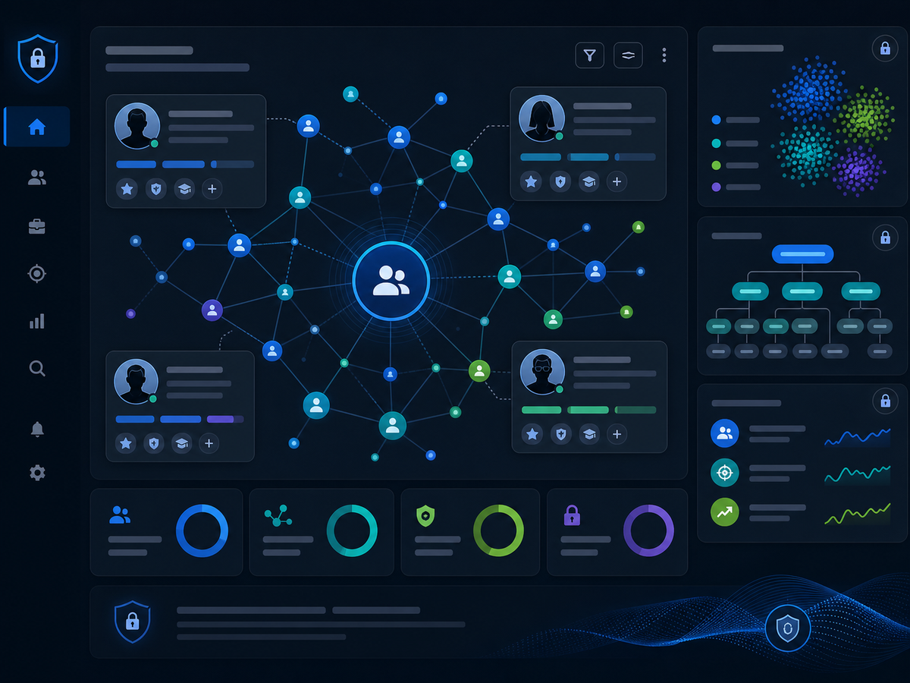

HyreFast Intelligence Layer
POC Client ConfidentielIngénieur IA/ML (SpearHub)
Plateforme d'intelligence de recrutement full-stack sur LangGraph, FastAPI, Neo4j, Redis, Celery et MCP — ingestion de CV, extraction structurée et matching candidat-poste.
Ingestion auto-réparatrice : Boucle de réparation des erreurs classifiées avec relances adaptatives.
Normalisation des compétences : Matching multi-étapes (BM25 + scoring lexical + graphe sur 12 000+ compétences).
LangGraph
Neo4j
FastAPI
MCP Tools
Docker
